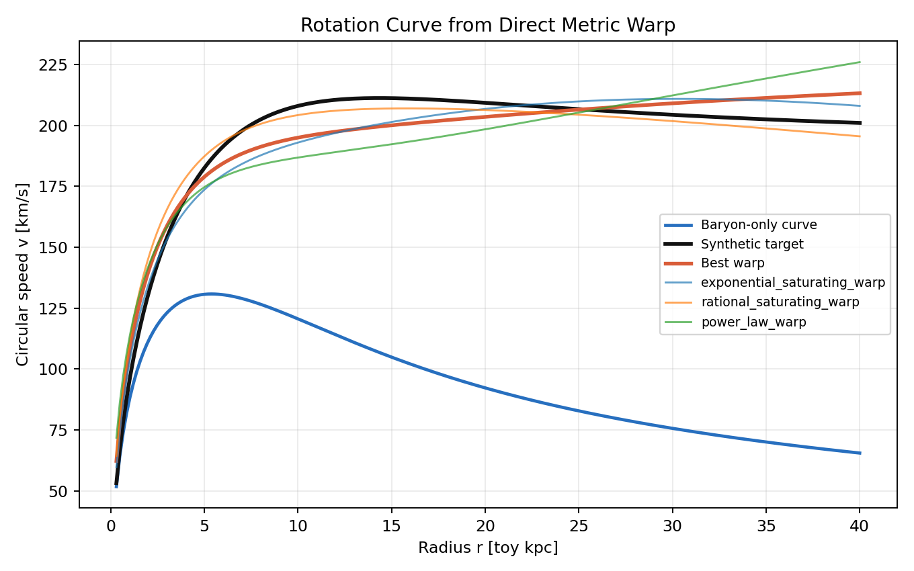
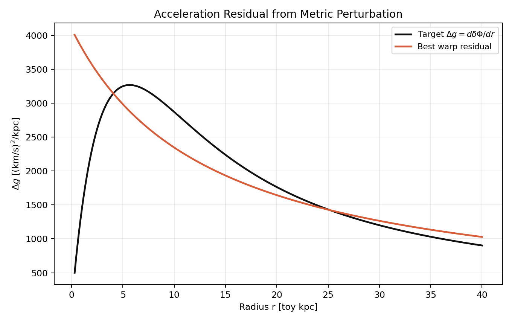
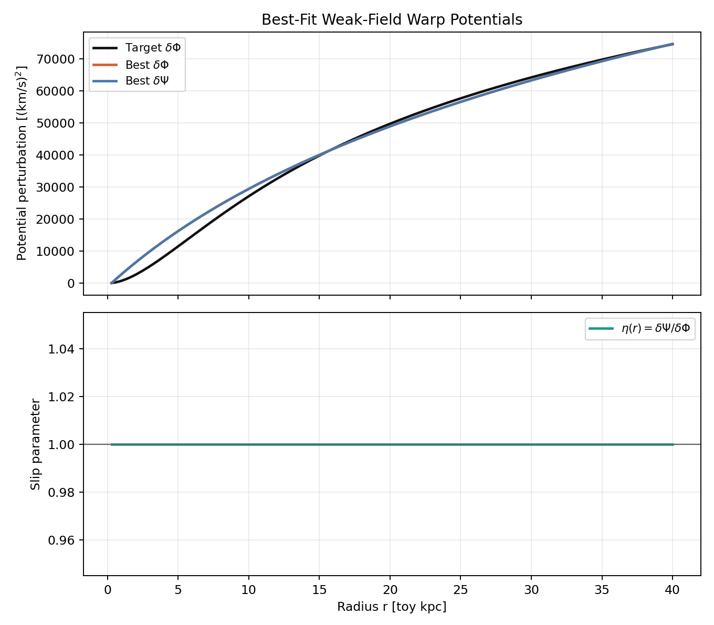
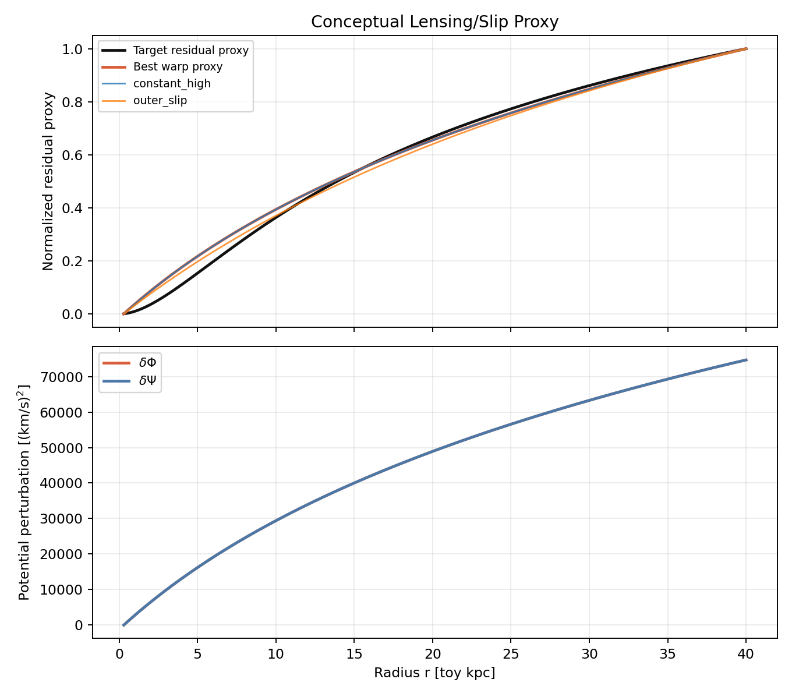
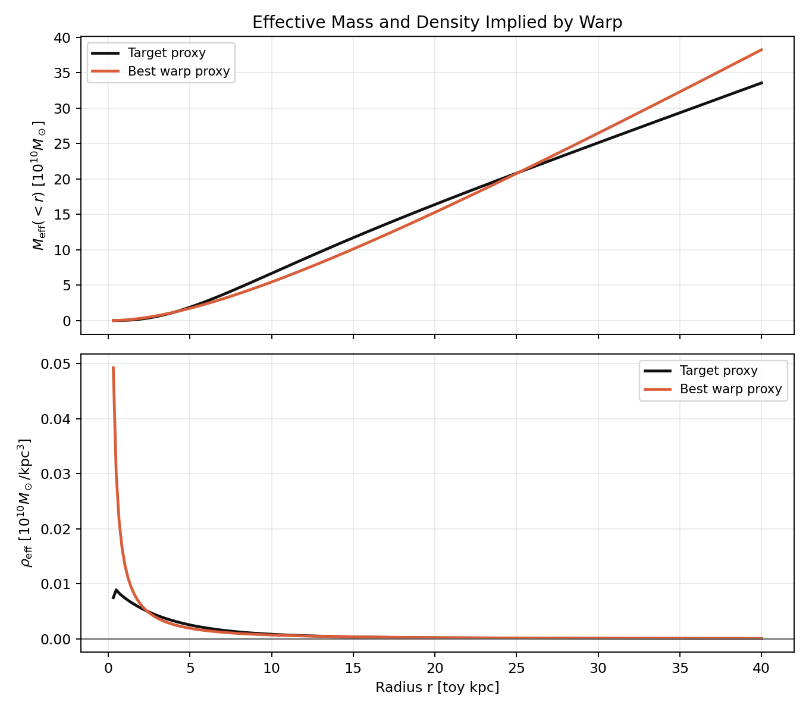
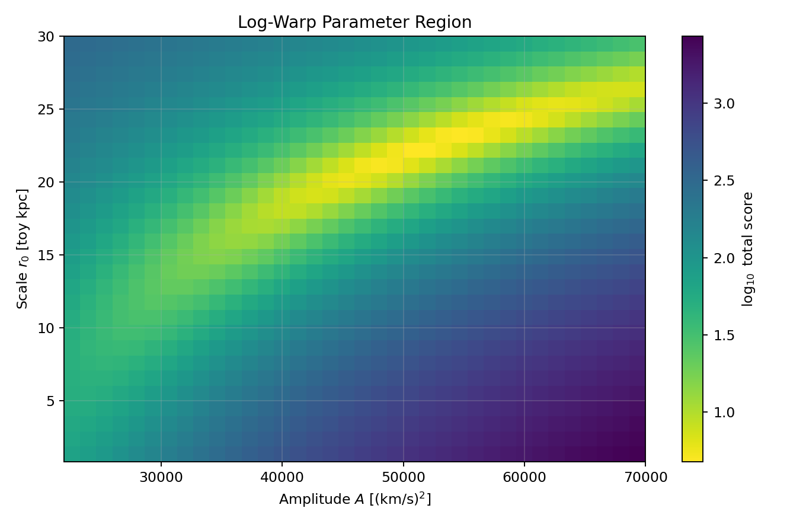
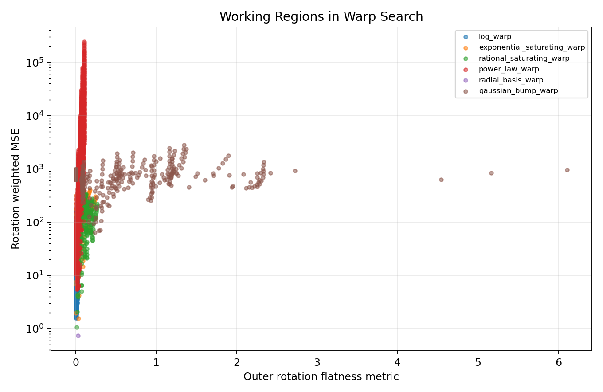
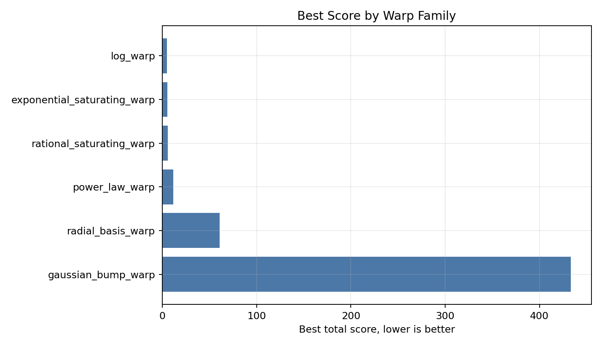
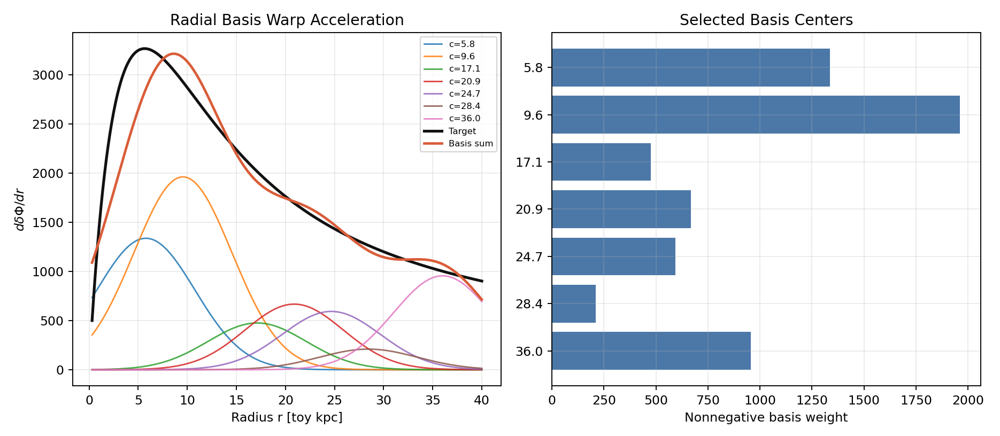

Geometry-First Grid Search over Weak-Field Spacetime Warps
Abstract
This standalone report searches directly over weak-field spacetime warps rather than over named dark-matter or modified-gravity theories. It is a synthetic radial prototype for asking what kinds of metric perturbations reproduce a galaxy-like dynamical residual.
Conceptual Motivation
\[ g_{\mu\nu}^{\rm trial} = g_{\mu\nu}^{\rm bar} + h_{\mu\nu}(\theta). \]The experiment asks what geometric perturbations numerically generate the residual, and what effective physical structure those perturbations imply.
Weak-Field Metric Ansatz
\[ ds^2 = -\left(1+\frac{2\Phi(r)}{c^2}\right)c^2dt^2 + \left(1-\frac{2\Psi(r)}{c^2}\right) \left(dr^2+r^2d\Omega^2\right). \] \[ \Phi=\Phi_{\rm bar}+\delta\Phi, \qquad \Psi=\Psi_{\rm bar}+\delta\Psi. \]Rotation probes \(d\Phi/dr\), while the toy lensing/slip proxy responds to \(\Phi+\Psi\).
Warp Search Space
The grid includes logarithmic, power-law, exponential, rational saturating, Gaussian bump, and nonnegative radial basis perturbations. Slip is parameterized as
\[ \delta\Psi(r)=\eta(r;\lambda)\delta\Phi(r). \]Objective and Diagnostics
\[ \mathcal{J}(\theta) = \chi^2_{\rm rot} + \lambda_1 S_{\rm smooth} + \lambda_2 P_{\rm path} + \lambda_3 P_{\rm weak} + \lambda_4 C(\theta) + \lambda_5 P_{\rm lens}. \] \[ \rho_{\rm eff}(r) = \frac{1}{4\pi G r^2} \frac{d}{dr} \left[ r^2\frac{d}{dr}\delta\Phi(r) \right]. \]Results
The best-ranked trial is log_warp with slip mode no_slip and score 4.7852.
Rotation and Residual Fit


Metric Potentials and Slip


Effective Density Proxy

Parameter Regions



Basis Warp

Top-Ranked Candidates
| family | eta_mode | total_score | rotation_mse | lensing_mse | flatness_metric | weak_field_max | params |
|---|---|---|---|---|---|---|---|
| log_warp | no_slip | 4.7852 | 2.0763 | 0.1180 | 0.0117 | 1.3904e-06 | {"A": 54914.28571428571, "r0": 13.407151859613021} |
| log_warp | no_slip | 4.7975 | 1.9535 | 0.1534 | 0.0092 | 1.3841e-06 | {"A": 50800.0, "r0": 11.723008346614838} |
| log_warp | no_slip | 4.8196 | 1.7910 | 0.2030 | 0.0095 | 1.4064e-06 | {"A": 52171.428571428565, "r0": 11.723008346614838} |
| log_warp | no_slip | 5.0265 | 2.1502 | 0.1543 | 0.0120 | 1.4111e-06 | {"A": 56285.71428571428, "r0": 13.407151859613021} |
| log_warp | no_slip | 5.0740 | 1.9001 | 0.2324 | 0.0070 | 1.3940e-06 | {"A": 48057.142857142855, "r0": 10.25041904006358} |
| log_warp | no_slip | 5.1222 | 2.2003 | 0.1694 | 0.0114 | 1.3696e-06 | {"A": 53542.857142857145, "r0": 13.407151859613021} |
| log_warp | no_slip | 5.2280 | 2.5194 | 0.1042 | 0.0143 | 1.3895e-06 | {"A": 59028.57142857143, "r0": 15.333241747510177} |
| log_warp | no_slip | 5.3743 | 1.6432 | 0.3786 | 0.0073 | 1.4178e-06 | {"A": 49428.57142857143, "r0": 10.25041904006358} |
| log_warp | no_slip | 5.4456 | 2.3426 | 0.2065 | 0.0088 | 1.3618e-06 | {"A": 49428.57142857143, "r0": 11.723008346614838} |
| log_warp | no_slip | 5.4704 | 2.4739 | 0.1809 | 0.0140 | 1.3703e-06 | {"A": 57657.142857142855, "r0": 15.333241747510177} |
Family Summary
| family | count | best_total_score | best_rotation_mse | best_lensing_mse | best_eta_mode | best_flatness_metric | best_weak_field_max |
|---|---|---|---|---|---|---|---|
| log_warp | 5040 | 4.7852 | 2.0763 | 0.1180 | no_slip | 0.0117 | 1.3904e-06 |
| exponential_saturating_warp | 640 | 5.6135 | 1.9764 | 0.3727 | no_slip | 0.0040 | 1.3517e-06 |
| rational_saturating_warp | 2560 | 6.0670 | 1.0534 | 0.2698 | constant_low | 0.0149 | 1.4592e-06 |
| power_law_warp | 6300 | 11.6641 | 6.2762 | 0.3203 | no_slip | 0.0340 | 1.3799e-06 |
| radial_basis_warp | 5 | 60.6587 | 0.7383 | 0.1750 | no_slip | 0.0300 | 1.3611e-06 |
| gaussian_bump_warp | 1680 | 433.2462 | 71.2617 | 3.1297 | constant_high | 0.3062 | 1.2917e-06 |
Selected Basis Terms
| center | width | weight |
|---|---|---|
| 5.7778 | 5.0000 | 1.3374e+03 |
| 9.5556 | 5.0000 | 1.9622e+03 |
| 17.1111 | 5.0000 | 475.6548 |
| 20.8889 | 5.0000 | 667.2866 |
| 24.6667 | 5.0000 | 593.1088 |
| 28.4444 | 5.0000 | 209.5958 |
| 36.0000 | 5.0000 | 955.1286 |
Interpretation
The successful warps are smooth and long-range. The flat target curve favors \(d\delta\Phi/dr\sim 1/r\), so the corresponding perturbation is approximately logarithmic over the outer radial range. Localized bumps and rapidly saturating perturbations generally struggle or become pathologic.
Limitations
This is a weak-field radial toy model with synthetic data. It is not a full Einstein-tensor calculation, not a real galaxy fit, and not proof of new physics. Coordinate and gauge issues are suppressed by the ansatz, and the lensing proxy is conceptual.
Most Promising Next Directions
- Fit real SPARC-like rotation curves.
- Use disk geometry.
- Compute full metric-perturbation curvature diagnostics.
- Use automatic differentiation over the metric ansatz.
- Use symbolic regression over warp functions.
- Enforce covariant conservation.
- Jointly fit rotation and lensing.
- Classify learned warp families across galaxies.
Conclusion
The purpose is not to assume a named theory, but to numerically explore the space of possible weak-field geometric deformations and analyze which kinds of spacetime warps reproduce the observed residual dynamics.
References
- Rubin, V. C., Ford, W. K., Jr., and Thonnard, N. (1980). Extended rotation curves of spiral galaxies.
- Lelli, F., McGaugh, S. S., and Schombert, J. M. (2016). SPARC database and disk-galaxy mass models.
- McGaugh, S. S., Lelli, F., and Schombert, J. M. (2016). Radial acceleration relation.
- Bertone, G., and Hooper, D. (2018). History and status of dark matter.
- Mistele, T., McGaugh, S., Lelli, F., Schombert, J., and Li, P. (2024). Weak-lensing constraints related to extended flat circular velocities.